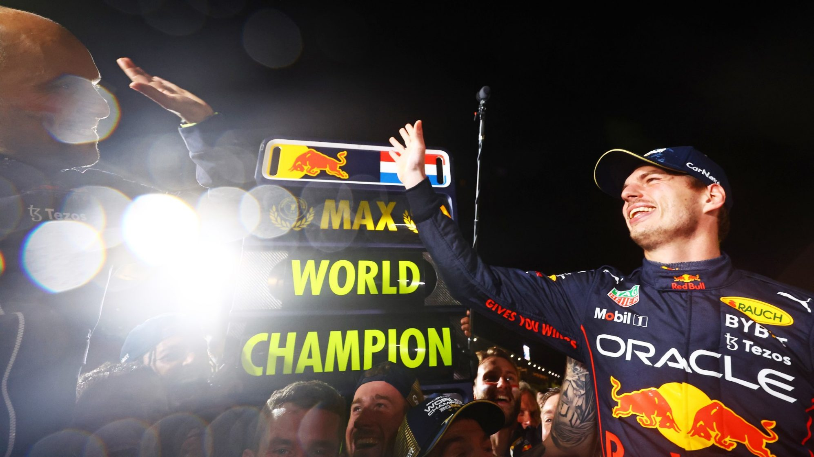

Résumé GP du Japon 2022
Rédigé par Clément Lazzarini, le 09/10/2022
Le désastre de la FIA
Honnêtement, les mots me manquent pour parler de ce que l'on a vu ce week-end... La FIA nous a offert un spectacle des plus honteux et a ruiné son image et celle de la F1 par la même occasion.
Revenons tout d'abord sur le plus grave : le tracteur sur la piste alors que les F1 ne sont pas encore aux stands. En soit ce n'est pas interdit par le règlement, car nous l'avons aussi vu à Monza il y a de cela un mois maintenant. Mais le voir dans ces conditions pluvieuses avec très peu de visibilité, et surtout sur ce circuit. Est-il réellement nécessaire de rappeler le terrible accident de Jules Bianchi en 2014 sur ce même circuit et dans les mêmes conditions ?
Mais ce n'est pas le seul carnage de la FIA du week-end. Le drapeau à damier a été donné un tour avant la fin. Oui oui, vous avez très bien lu. La fin de la course a été donnée un tour avant la fin ! Ce qui a mis dans la confusion l'ensemble des écuries et pilotes, car certains ont ralenti la cadence à la vue du drapeau et d'autres on continué dans le doute. Une situation plus que dangereuse.
Pour finir dans les exploits de la FIA, il faut signaler le désastre de l'annonce du second titre de Champion du Monde de Max Verstappen. Un moment de malaise infini pour tout le monde.
Une course intéressante
Mais revenons en au sportif. Le départ initial de la course s'est très bien déroulé dans l'ensemble, jusqu'à la sortie de piste de Carlos Sainz quelques virages plus loin provoquant un drapeau rouge. Le drapeau rouge lui a duré une éternité, mais il était nécessaire au vu des conditions très dangereuses de la piste. Puis on a eu le droit à notre course enfin, avec un départ lancé cette fois-ci. Les pilotes sont tous passés au stands dans les premiers tours de courses pour passer des gommes intermédiaires, bien plus efficace et rapides et que les gommes max pluies. Mais les grands gagnants de ce passage aux stands, c'est Vettel et Latifi qui eux ont changés leurs gommes un tour avant les autres !
Au final, Nicholas Latifi marque ses premiers points de la saison ! Un véritable miracle sachant que vendredi encore, il se trompait d'endroit où tourner sur le circuit. Très belle opération d'Alpine qui repasse devant McLaren au championnat, grâce à la très belle 4ème place d'Esteban Ocon devant Lewis Hamilton. Très belle opération également de Sebastian Vettel qui termine 6ème !
Le doublé pour Max
Charles Leclerc n'a rien pu faire face aux Red Bull et termine troisième. Les Red Bull étaient effectivement trop fortes, mais il y a surtout un pilote qui a été trop fort tout au long de l'année, et il est maintenant double Champion du Monde ! Max Verstappen décroche donc à Suzuka son deuxième titre mondial. Un titre absolument mérité, car il a été au-dessus du lot tout au long de l'année. Il ne lui reste plus qu'à dérouler jusqu'à la fin de l'année, mais croyez moi, il fera tout pour gagner les quatre dernières courses ! En tous cas un grand bravo à lui pour cette saison et pour son deuxième titre !
On se retrouve dans deux semaines pour le Grand Prix des Etats-Unis !